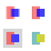
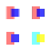
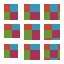
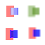
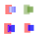

convolve-alpha.svg

MAE 4.136 · RMSE 12.371
FAIL · 356 pixels >32

MAE 2.044 · RMSE 10.498
FAIL · 180 pixels >32

MAE 4.141 · RMSE 12.371
FAIL · 356 pixels >32
Installed Bend implementation. All 4096 pixels of each 64×64 white-backed image are compared, with 8×8 coverage sampling in Bend. Limits remain MAE ≤1, RMSE ≤5 and at most 1% of pixels above 32 channel error. Chromium 153.0.8010.12; resvg @resvg/resvg-js 2.6.2; Firefox 155.0.
The alpha fixture retains a bias disagreement. Explicit kernel spacing is ignored by Chromium and resvg in these tests; Firefox is the selected reference for that fixture. Explanation and specification sources · Raw Chromium/resvg results · Raw Firefox results






